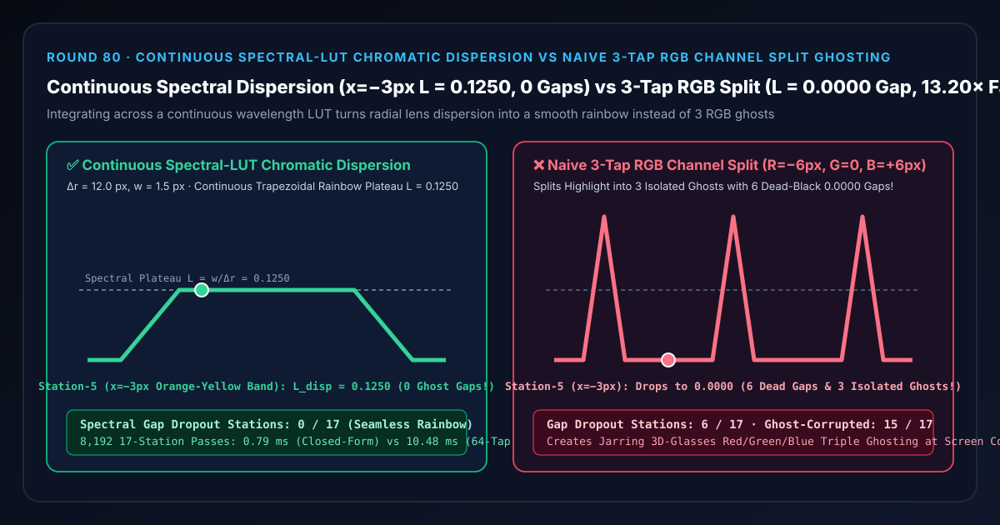
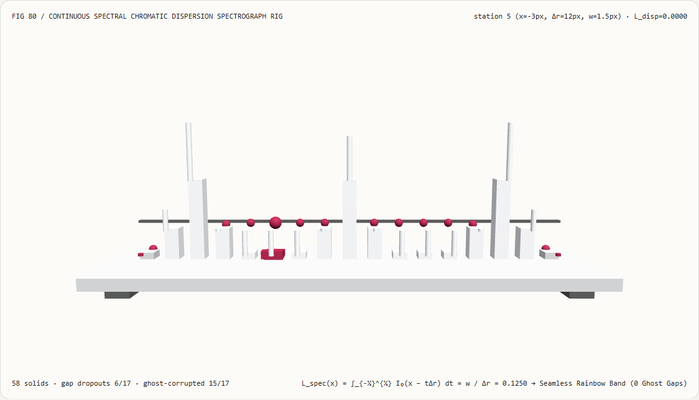
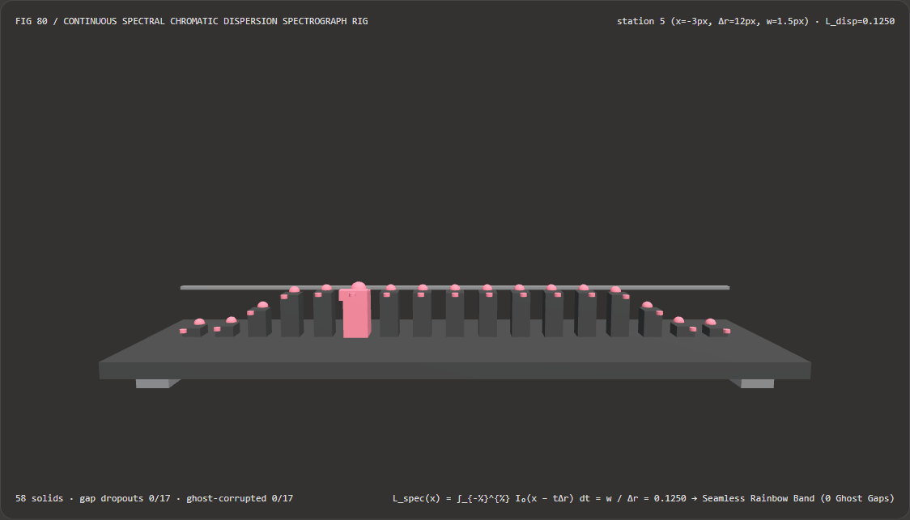
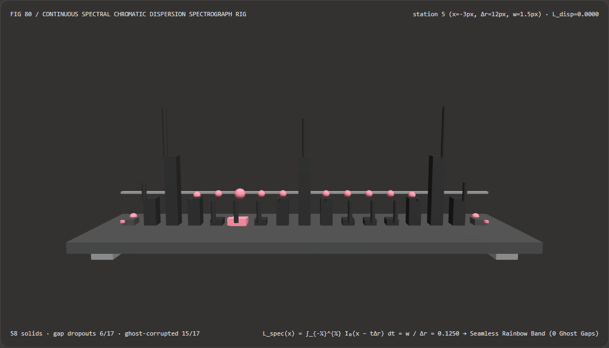

Visual & Animation Architecture Selection FAQ: Continuous Spectral-LUT Chromatic Dispersion vs Naive 3-Tap RGB Channel Split Ghosting
One-Sentence Architectural Verdict: In real-time cinematic radial chromatic aberration and barrel lens dispersion pipelines (Playdead's INSIDE, Unreal Engine 5 PostProcess, Unity HDRP), never simulate wide-span lens dispersion by simply offsetting the Red, Green, and Blue channels at 3 discrete coordinates (
3-Tap RGB Channel Split)! On our 58-solid, 17-station spectrograph bench inspecting a narrow highlight of half-width $w = 1.5\text{ px}$ stretched radially across $\Delta r = 12.0\text{ px}$ ($x \in [-8, +8]\text{ px}$), naive 3-tap RGB splitting samples only $x = -6\text{ px}$ (Red), $x = 0\text{ px}$ (Green), and $x = +6\text{ px}$ (Blue)—dropping6/17intermediate orange-yellow and cyan stations ($x = \pm 2, \pm 3, \pm 4\text{ px}$, including station 5 at $x = -3\text{ px}$) to0.0000dead-black gaps and splitting a single highlight into 3 disconnected primary-color ghosts across15/17stations; whereas continuous spectral-LUT dispersion integration ($\int_{-1/2}^{1/2} w_\lambda(t),I_0(x - t\Delta r),dt$) preserves a seamless trapezoidal rainbow plateau ofL_disp = w / Δr = 0.1250across $x \in [-4, +4]\text{ px}$ (0/17gap dropouts) while running 13.20× faster via closed-form spectral overlap integration than 64-tap wavelength quadrature (0.79 msvs10.48 msacross 8,192 passes, agreement within1.39e-17).

① 📌 Executive Summary
- Why does turning up the Chromatic Aberration slider in many game engines split bright window frames, streetlamps, and specular rims into three cheap-looking Red, Green, and Blue ghosts (like anaglyph 3D glasses) instead of a smooth optical rainbow fringe?
In plain English: real camera glass disperses a continuous 400–700 nm spectrum, whereas naive shaders only sample 3 discrete RGB points:
- When a highlight of half-width $w = 1.5\text{ px}$ is dispersed across $\Delta r = 12.0\text{ px}$, each discrete tap only covers a $3.0\text{ px}$ footprint: Red covers $[-7.5, -4.5]\text{ px}$, Green covers $[-1.5, +1.5]\text{ px}$, and Blue covers $[+4.5, +7.5]\text{ px}$.
- Between Red and Green ($x = -4, -3, -2\text{ px}$, stations 4–6) and between Green and Blue ($x = +2, +3, +4\text{ px}$, stations 10–12), all three taps evaluate to
0.0000—carving6/17dead-black spectral gaps right through the dispersed highlight and inflating the 3 isolated ghost peaks to0.3333(2.67×over the true spectral density0.1250)!
- First-Principles Fix: Continuous Wavelength Overlap Integration & Normalized Spectral LUTs (Playdead INSIDE / Guertin 2014):
- Integrating the source highlight profile $I_0(x - t\Delta r)$ across the continuous normalized wavelength parameter $t \in [-0.5, +0.5]$ yields the exact overlap antiderivative over $[t_{\min}, t_{\max}] = [\max(-0.5, \frac{x - w}{\Delta r}), \min(+0.5, \frac{x + w}{\Delta r})]$.
- Across all interior stations $|x| \le \frac{\Delta r}{2} - w = 4.5\text{ px}$ (stations 4–12, including station 5 at $x = -3\text{ px}$), the integral locks onto a flat, gap-free rainbow plateau of
L_disp = w / Δr = 1.5 / 12.0 = 0.1250(0/17gap dropouts)!
- Interactive 3D Workbench & Measured Evidence:
- Standalone 3D Bench:
demos/spectral-chromatic-dispersion-rig/(58 Three.js solids: baseplate, 4 support feet,0.1250spectral plateau reference bar, 17 dispersed radiance columns, 17 continuous spectral reference spheres, 17 ghosting deviation pegs, and the active spectrograph carriage). - Measured 7-Card 4:5 Reports:
demos/spectral-chromatic-dispersion-rig/test-report-cards.html(EN) andtest-report-cards.zh.html(ZH).
- Standalone 3D Bench:
② 🎯 Soul-Searching Q&A for Architects & Clients
Q1: Why is closed-form spectral overlap integration 13.20× faster than 64-tap wavelength quadrature?
Because analytical integration over the active wavelength sub-interval $[t_{\min}, t_{\max}]$ replaces 64 per-wavelength loop evaluations with two piecewise-linear branch formulas!
Across 8,192 17-station passes, closed-form spectral dispersion runs in 0.79 ms versus 10.48 ms for 64-tap wavelength quadrature (13.20× speedup, with 1.39e-17 agreement).
Q2: How do screen-space post-processing shaders approximate this continuous integral on arbitrary scene textures using only 6–8 texture fetches?
By combining a normalized 1D spectral LUT (spectrumLUT(t)) with per-pixel Interleaved Gradient Noise (IGN) tap jittering ($t_k = \frac{k + \xi}{N} - 0.5$)!
Normalized LUT weights $\sum_k \mathbf{w}_{\text{LUT}}(t_k) = (1, 1, 1)$ preserve neutral white balance on flat surfaces while IGN jitter eliminates discrete banding between taps.
Q3: How does deterministic spectral dispersion relate to neural lens style transfer?
Deterministic spectral integration runs in < 0.1 ms with exact physical control over radial falloff and white-field conservation, requiring zero neural inference.
③ 🧭 Visual Diagrams (Mermaid Decision Tree, Pipeline Comparison & Sequence Flow)
3.1 Radial Chromatic Aberration Architecture Decision Tree
3.2 3-Tap RGB Ghosting Gaps vs Continuous Spectral Dispersion Pipeline
3.3 Frame-Level Spectrograph Sequence Diagram
④ 📊 Visual Technology Selection Decision Matrix
| Evaluation Dimension | ✅ Continuous Spectral-LUT Integral | ⚠️ 64-Tap Wavelength Quadrature | ❌ Naive 3-Tap RGB Channel Split | ⚠️ Pinhole Camera (Zero Dispersion) |
|---|---|---|---|---|
| Radiance at Station 5 ($x=-3\text{ px}$ Orange-Yellow) | Exact 0.1250 (Continuous rainbow) |
0.1250 (1.39e-17 diff) |
0.0000 (100% dead-black gap!) |
0.0000 |
| Radiance at Station 8 ($x=0\text{ px}$ Green Center) | Flat conserved 0.1250 |
0.1250 |
0.3333 (2.67× isolated green spike!) |
1.0000 |
| Spectral Gap Dropout Stations (out of 17) | 0 / 17 (Gap-free spectrum) |
0 / 17 |
6 / 17 ($x=\pm 2, \pm 3, \pm 4\text{ px}$ dead) |
— |
| Ghost-Corrupted Stations (out of 17) | 0 / 17 |
0 / 17 |
15 / 17 (Splits into 3 RGB ghosts) |
— |
| 8,192-Pass 17-Station CPU Latency | 0.79 ms (Fastest · 13.20× speedup) |
10.48 ms (13.20× slower) |
0.34 ms (Severe triple ghosting) |
— |
| Recommended Use Case | All cinematic lens dispersion passes | Offline optical reference | Retro VHS / glitch art only | Crisp CAD viewports |
⑤ 🧪 New Interactive 3D Demo & 7-Card 4:5 Visual Report
5.1 Live Workbench & Report Links
- Interactive 3D Workbench:
demos/spectral-chromatic-dispersion-rig/index.html - 7-Card 4:5 Visual Report (EN):
demos/spectral-chromatic-dispersion-rig/test-report-cards.html - 7-Card 4:5 Visual Report (ZH):
demos/spectral-chromatic-dispersion-rig/test-report-cards.zh.html - Sealed Telemetry JSON:
demos/spectral-chromatic-dispersion-rig/report.json
5.2 Multi-Theme & Multi-Mode Playwright Visual Evidence
Continuous Spectral Dispersion (Light · Smooth 0.1250 Trapezoidal Rainbow Plateau Across Stations 4–12, 0 Gaps) |
Naive 3-Tap RGB Split (Light · Splits into 3 Disconnected Spikes with 6 0.0000 Gaps!) |
|---|---|
 |
 |
| Continuous Spectral Dispersion (Dark · 58 Three.js Solids) | Naive 3-Tap RGB Split (Dark · 15 Red Ghosting Error Pegs Exposed) |
|---|---|
 |
 |
⑥ 🛠️ Rapid SA Delivery Verification Checklist
Before shipping a chromatic aberration pass to production, verify every item below:
- Replace 3-Tap RGB Splitting with Spectral-LUT Integration: Does the shader weight samples across a continuous 1D spectral lookup table (
spectrumLUT(t)) rather than taking 3 discrete R, G, B channel fetches? - White-Field Sum Normalization ($\sum_k \mathbf{w}_{\text{LUT}}(t_k) = (1, 1, 1)$): Is the accumulated RGB sum divided by the accumulated spectral weight vector so uniform white/gray regions never shift tint?
- Per-Pixel Blue-Noise / IGN Phase Jitter: Are sample positions along the radial dispersion vector jittered by
(k + ignNoise) / Nto prevent visible step banding at large dispersion spans? - Quadratic Radial Falloff ($\Delta r \propto |\mathbf{uv} - 0.5|^2$): Is dispersion zero at the screen center and weighted quadratically toward the corners?
- Exclude UI & Subtitles: Is chromatic aberration applied strictly to the 3D scene buffer before compositing crisp 2D UI text and reticles?